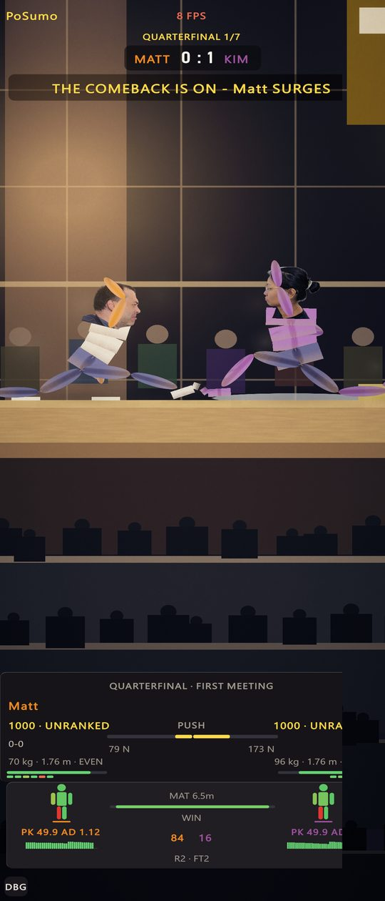
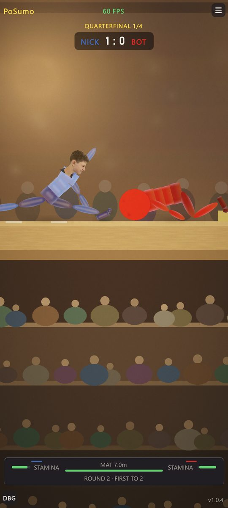
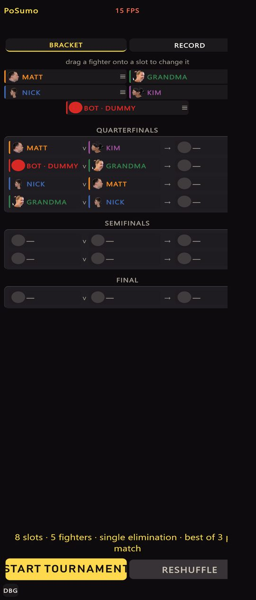
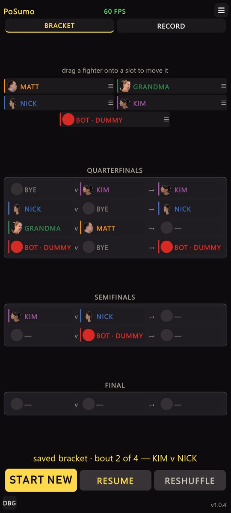
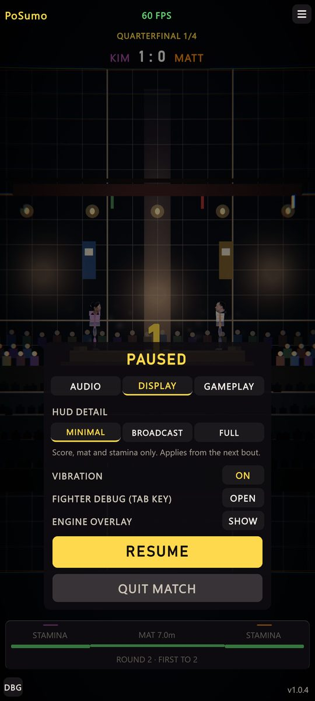
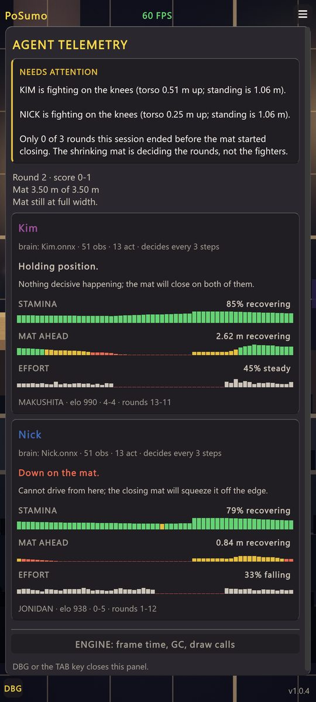
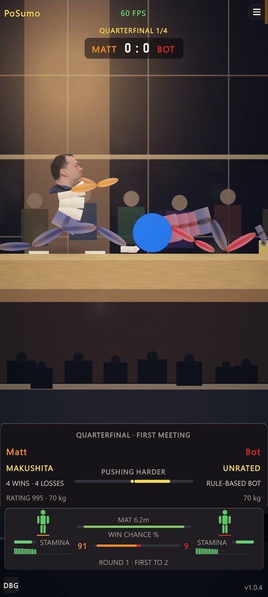

PoSumo UI review
Before and after captures for the UI changes made on 2026-10-04. Red numbers mark problems in the old screen; green numbers mark what changed in the new one. "Before" frames were captured from the Editor before any change; "after" frames at 1080x2400.
1. Bout screen
The default HUD is now the MINIMAL preset. BROADCAST and FULL are chosen in Settings → Display.

1 2 3 4 5 6 7- Frame-rate chip read 8 FPS in red while the game ran at about 60.
- Caster banner sat on the scorebug band for most of a round.
- Placeholder grid backdrop.
- Arms drew over faces; both fighters shared blue-violet legs and white torsos.
- Empty band of black crowd silhouettes.
- Crowded dock: rating, record, push newtons, "PK 49.9 AD 1.12", "R2 · FT2", win odds, sparklines.
- Right edge clipped; no menu button and no version stamp visible.

1 2 3 4 5 6 7- Frame rate averaged over one second; reads 60.
- Menu button is back in the top-right corner and opens the settings sheet.
- Plain arena wall replaces the grid; no caster banner at this density.
- Whole body carries the team colour; the Bot is red throughout; faces sit above the arms.
- Crowd tiers are lit and coloured.
- Dock shows only stamina per fighter, the mat meter and "ROUND 2 · FIRST TO 2".
- Version stamp is visible bottom-right; nothing is clipped.
2. Bracket screen

1 2 3 4 5- Frame-rate chip read 15 FPS in red.
- Five fighters filled eight slots, so Matt, Grandma and Nick each appeared twice and could meet themselves.
- Half the screen was empty.
- "START TOURNAMENT" overflowed its button.
- Right edge clipped: no menu button, no version stamp, cards cut off.

1 2 3 4 5- Menu button present; frame rate reads 60; version stamp bottom-right.
- Each fighter is seeded once. Empty slots are BYE rows that advance without a bout.
- Round cards share the free height. A NEXT BOUT / CHAMPION card appears under FINAL once the bracket runs.
- A saved bracket is announced after a restart.
- START NEW, RESUME and RESHUFFLE fit their buttons.
3. New screens
These did not exist before, so there is no "before" frame.

1 2 3- One sheet with AUDIO, DISPLAY and GAMEPLAY tabs replaces the pause card.
- HUD detail: MINIMAL, BROADCAST or FULL, applied from the next bout.
- Vibration, fighter debug and the engine overlay live here.

1 2- NEEDS ATTENTION lists problems in plain words and only when they are true.
- Per-fighter brain, verdict and 30-second graphs are unchanged below it.

1 2- Fighter panel in plain words: rank, wins and losses, rating, weight, who is pushing harder.
- Dock adds damage figures, win chance and stamina history.